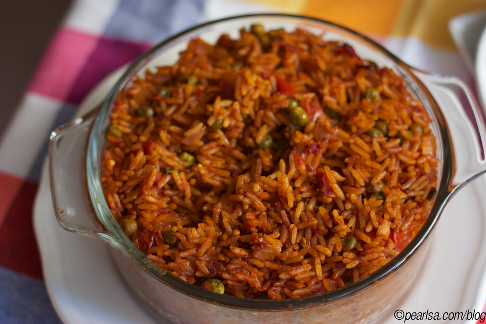

Jollof Rice Recipe

Description
Jollof rice is a vibrant, flavorful one-pot rice dish that is a staple across West Africa. Made with long-grain rice, tomatoes, onions, red bell peppers, and a blend of savory spices, it delivers a rich, slightly smoky flavor and an iconic reddish-orange color.
This classic recipe is perfect for family gatherings or celebrations and pairs wonderfully with fried plantains, grilled chicken, or fresh salad.
Ingredients
- 2 cups long-grain parboiled rice
- 1 can (14 oz) diced tomatoes or tomato puree
- 3 tablespoons tomato paste
- 1 large red bell pepper (tatashe)
- 1 large yellow onion
- 1 Scotch bonnet pepper (habanero)
- 3 cups chicken stock
- 1/2 cup vegetable oil
- 1 cup green peas and diced vegetables
- 1 teaspoon dried thyme
- 1 teaspoon curry powder
- 2 bay leaves
- Salt and seasoning cubes to taste
Steps
- Blend the red bell pepper, Scotch bonnet pepper, tomatoes, and half of the onion together until smooth.
- Heat the vegetable oil in a large pot over medium heat. Slice the remaining onion and fry until translucent.
- Add the tomato paste and fry for 5–7 minutes, stirring constantly to remove the tartness.
- Pour in the blended pepper mixture and let it cook down until the oil begins to separate from the sauce.
- Season with curry powder, dried thyme, bay leaves, salt, and seasoning cubes. Stir thoroughly.
- Add the chicken stock, bring the mixture to a boil, and taste to adjust seasoning if needed.
- Rinse the parboiled rice thoroughly under cold water, then stir it into the boiling sauce until well coated.
- Cover the pot tightly with aluminum foil or a lid to trap the steam. Lower the heat to low and cook for 25–30 minutes until the rice absorbs the liquid and becomes tender.
- Stir in the green peas during the last 5 minutes of cooking. Remove the bay leaves before serving.
Home